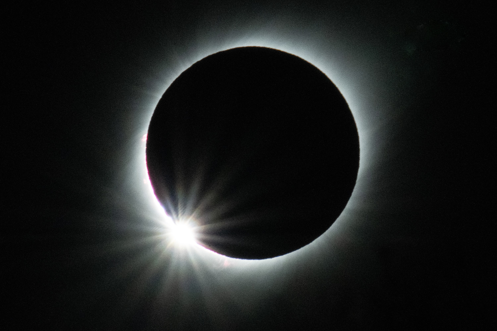
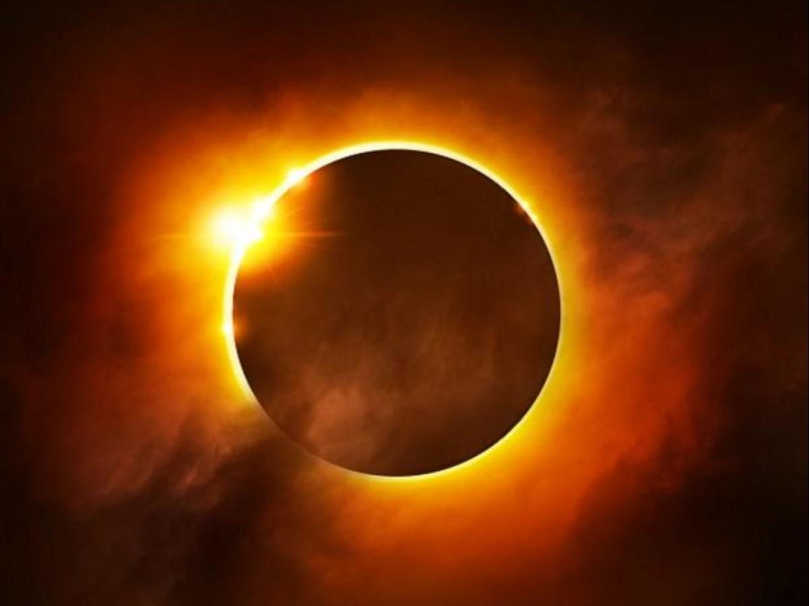

Solar Eclipse And Lunar Eclipse
Solar Eclipse

A solar eclipse is a darkening of the sun caused by another heavenly body the moon coming between it and the spectator. The cause is so simple and familiar that it is difficult to imagine what terror was caused by such a phenomenon, before a knowledge of astronomy showed how it arose.
The ancients did not consider eclipses to be in the natural order of things, but some thing monstrous, predicting terrible disasters.In Rome, at one time, to talk publicly of their being due to natural causes was an offence punishable by law So strong a hold had this superstition on the popular mind that, even after it came to be generally believed that eclipses of the sun were caused by the moon coming between the earth and the sun, eclipses of the moon were still considered to be due to some supernatural power.
When the moon was in eclipse, the people turned out and made a great noise with brazen instruments the idea being that by doing so they gave her ease in her affliction. Similar notions have prevailed among all barbarian tribes.
The Chinese imagine eclipses to be caused by great dragons trying to devour the sun and the moon, and accordingly they beat drums and brass kettles to terrify the monsters into letting go their prey. Even in modern India, the ignorant country people still believe that an eclipse, like a comet, is an omen of coming disaster.
The sun may be partially or wholly eclipsed. A partial eclipse is caused by the moon passing over part of the face of the sun. The sun’s disc loses its circular form; one part becomes obscured. The obscuration increases for a time and then diminishes until it disappears altogether.A total eclipse takes place when the moon comes between the sun and the earth, and the whole sun becomes slowly darkened and finally disappears for a time. It is observed that solar eclipses always happen at the time of a new moon, when the sun and moon are on the same side of the earth.
Astronomers can calculate when the moon will come between the earth and the sun, and so can predict exactly when an eclipse will take place and how long it will last.The mass of unenclosed are, accordingly, catches the sunlight, and reflects it into the region of the total eclipse, making there a peculiar twilight. Stars and planets appear, and all animals are dismayed by the dismal aspect of nature.
Lunar Eclipse

A lunar eclipse occurs when the Moon moves into the Earth's shadow.[1] This can occur only when the Sun, Earth, and Moon are exactly or very closely aligned (in syzygy) with Earth between the other two, and only on the night of a full moon. The type and length of a lunar eclipse depend on the Moon's proximity to either node of its orbit.[citation needed]
A totally eclipsed Moon is sometimes called a blood moon for its reddish color, which is caused by Earth completely blocking direct sunlight from reaching the Moon. The only light reflected from the lunar surface has been refracted by Earth's atmosphere. This light appears reddish for the same reason that a sunset or sunrise does: the Rayleigh scattering of bluer light.
Unlike a solar eclipse, which can only be viewed from a relatively small area of the world, a lunar eclipse may be viewed from anywhere on the night side of Earth. A total lunar eclipse can last up to nearly 2 hours, while a total solar eclipse lasts only up to a few minutes at any given place, because the Moon's shadow is smaller. Also unlike solar eclipses, lunar eclipses are safe to view without any eye protection or special precautions, as they are dimmer than the full Moon.Earth's shadow can be divided into two distinctive parts: the umbra and penumbra. Earth totally occludes direct solar radiation within the umbra, the central region of the shadow. However, since the Sun's diameter appears about one-quarter of Earth's in the lunar sky, the planet only partially blocks direct sunlight within the penumbra, the outer portion of the shadow.Penumbral lunar eclipse
This occurs when the Moon passes through Earth's penumbra. The penumbra causes a subtle dimming of the lunar surface, which is only visible to the naked eye when about 70% of the Moon's diameter has immersed into Earth's penumbra.[2] A special type of penumbral eclipse is a total penumbral lunar eclipse, during which the Moon lies exclusively within Earth's penumbra. Total penumbral eclipses are rare, and when these occur, the portion of the Moon closest to the umbra may appear slightly darker than the rest of the lunar disk.Partial lunar eclipse
This occurs when only a portion of the Moon enters Earth's umbra, while a total lunar eclipse occurs when the entire Moon enters the planet's umbra. The Moon's average orbital speed is about 1.03 km/s (2,300 mph), or a little more than its diameter per hour, so totality may last up to nearly 107 minutes. Nevertheless, the total time between the first and the last contacts of the Moon's limb with Earth's shadow is much longer and could last up to 236 minutes.[3]